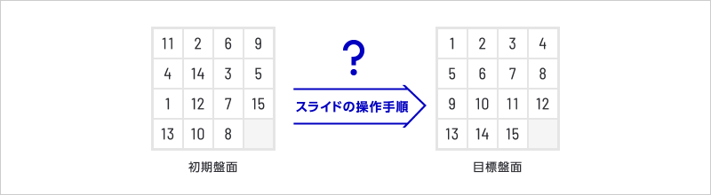
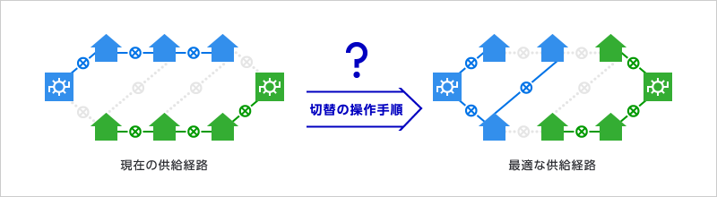
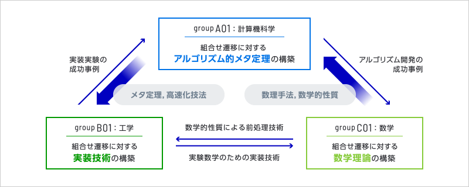

プロジェクト概要
組合せ遷移とは，「状態空間上での遷り変り」を数理モデル化・解析する新しいアルゴリズム理論である．その概念は，理論から応用まで多種多様な分野に現れるが，技術利用のハードルは高い．本研究領域では，研究でも実務でも障壁なく，組合せ遷移のアルゴリズム技術を利活用するための共通基盤を構築する．計算機科学・工学・数学の三分野から集まった研究者が協働し，組合せ遷移のアルゴリズム基盤，実装技術基盤，数学基盤の構築を目指す．
組合せ遷移とは
組合せ遷移の最も身近な例はパズルであろう．15パズルは，1から15までの数字の駒が配置された盤面が与えられたとき，1駒分の空きを利用して駒をスライドさせ，目標盤面に到達させるパズルである．15パズルには，空きの位置も考慮して16！通り（約10の13乗通り）の盤面が存在する．すなわち15パズルは，約10の13乗通りの盤面からなる状態空間において，初期盤面から目標盤面へと遷移させるスライドの操作手順を求めるパズルとみなせる．このような「状態空間上での遷り変り」を対象とするアルゴリズム理論が「組合せ遷移」である．


15パズルの例
組合せ遷移は産業にも現れ，電力の配電制御をはじめとする「常時稼働型システム」への応用が特に挙げられる．配電網は事故時の停電区間を小さく抑え込むため，複数の経路から電力が供給できるように構成されている．例えば，配電網の日本標準モデル (ベンチマークデータ) には，約10の58乗通りという膨大な供給経路の選択肢が存在する．この中から，最適な供給経路を算出するだけでも十分難しい．しかし，たとえ最適な供給経路が算出できても，常時稼働型システム特有の課題も生じる．すなわち，最適なものへ切り替えるためとはいえ，その切替途中でも停電を起こすわけにはいかないのである．したがって，配電制御では，約10の58乗通りの供給経路からなる状態空間において，現在の供給経路から最適なものへと，停電を起こすことなく遷移させる切替の操作手順を求めることが要求される．実際，組合せ遷移のアルゴリズム技術を，配電制御システムへ応用した事例もある．


配電制御の例
組合せ遷移の現状と課題
組合せ遷移は，研究・実務の広範な分野に現れ，実際に分野をまたがる成功事例も出てきた．しかしながら現在，組合せ遷移の技術は，それを研究する専門家のみが有するものであり，他分野の研究者や実務家は，専門家にアクセスする必要がある．これは新たな学際的研究の好機ともいえるが，適切な専門家に辿り着く機会は限られ，時間も要する．
一方で，例えば機械学習の技術は，分野，理論・応用を問わず急速に浸透し，利活用されている．ここまで広範な領域で技術が浸透したのは，専門家の活躍はもちろんだが，Pythonの充実したライブラリ等ソフトウェアによって研究開発の共通基盤が整備されたことも大きい．他にも，数式処理であればMathematica，組合せ問題であればSATソルバーやIPソルバーというように，共通のソフトウェアが整備されることで，非専門家が最先端の技術に容易にアクセスできるようになり，自領域内での問題解決が可能となっている．しかし，組合せ遷移に関していえば，まだそのような共通基盤は整備されていない．
本研究領域の目的
本研究領域の大目標は，研究でも実務でも障壁なく，組合せ遷移のアルゴリズム技術を利活用するための共通基盤を構築することである．その実現に向け，計算機科学・工学・数学の三分野から集まった研究者が協働し，組合せ遷移のアルゴリズム基盤，実装技術基盤，数学基盤の構築を目指す．そして，組合せ遷移のソフトウェア開発・整備に必要な基礎理論を固めていく．
